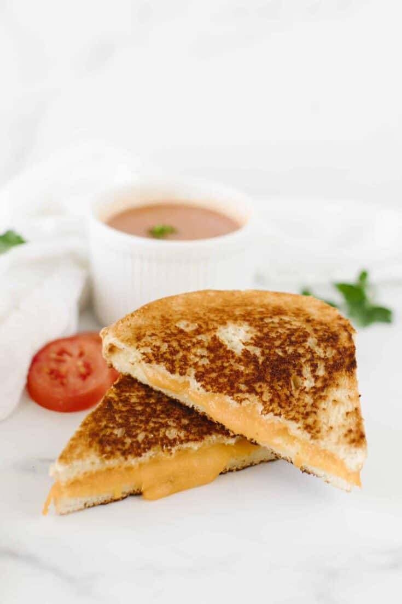

Grilled Cheese

Picture of a delicious grilled cheese sandwich, ready to eat (mmmm, yummy)
The grilled cheese sandwich is one of the oldest, most influental recipes of the human era. There
is evidence suggesting the grilled cheese can be dated all the way back to the Paleolithic period
(when when the woolly mammoth still roamed the earth!). Can you imagine only having rocks and
sticks and trying to conjure up a grilled cheese sandwich? I don't know how they did it, I guess
that's a testiment to how creative and resilient humans are. Anyway, here is a simple way to
recreate (in the most modern, lazy sense of the word) a grilled cheese sandwich! I hope you find
it easy and helpful, enjoy!
Ingredients
- Cheese
- Butter
- Bread
- Butter Knife
- Pan
- Parchment Paper
Steps
- Place parchment paper on pan
- Place two pieces of bread on parchment paper
- Use butter knife to spread butter on top sides of all pieces of bread
- Place cheese on top of each piece of bread
- Turn oven on broil (high) and place pan on top shelf of oven
- Come back in room, twiddle thumbs for a few moments, return to kitchen
- Check if cheese is bubbling, if so take out of oven (don't forget oven mit as it is hot).
- If not bubbling, wait until so
- Stack both pieces of bread onto eachother
- Bon' appetit